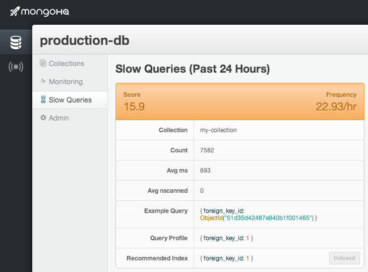

MongoDB Slow Queries Tracker & Profiler
“How can I get more performance from my database?”
“Is MongoDB web-scale?” [1]
Typically, when we answer these questions for MongoDB databases, we are looking at a handful of issues that can often be solved with:
- Adding RAM
- Optimizing slow queries
Our team is excited to announce that we have released a new feature, Slow Query Tracking, making one aspect of improving MongoDB performance very simple for our customers. This new tool tracks all queries on databases taking longer than 100ms. The tool then documents and ranks the queries. Finally, it recommends indexes to add to restore performance.
From the tool, you can click to add the recommended index and a job is created in the web interface that adds a background index to your database. Simple and fast, but powerful.
Now that you know what Slow Query Tracking is, here are some additional details about the features it includes:
The Pain Score
So, what exactly is a pain score? We created this metric to reflect the fact that poor indexing can present in a number of ways. For example:
- Total documents scanned (shown as an “nscanned” value)
- Number of concurrent queries
- Number of times, per day, a query is run
- Total time consumed to run each query
“My prediction? Pain” – Mr. T in Rocky II
Any one of these characteristics (or a combination of all of them) can drastically reduce performance on your database and cause your application pain and discomfort. We want to help you quickly identify the worst offenders and resolve your issues. So, this pain index provides you important context on which queries you should take action on first.
Index Recommendation and Adding
Along with rating the most pressing operations to take action on, the Slow Query Tracker offers a Recommended Index based on an evaluation of the operation being performed. Along with the recommendation, it includes a “Create Index” button that allows you to add the index, from the MongoHQ web interface, in the background.
An important note … as with adding indexes to MongoDB in general, it is best to add indexes to your database one-at-a-time. This is important for two reasons:
- A high number of concurrent indexes being added can really affect database performance.
- It is best to add an index, then evaluate your overall database performance. In essence: a measure, change, measure cycle is a best practice.
As a side note, along with all of our real-time monitoring tools, we include a smooth New Relic Integration (http://blog.mongohq.com/mongohq-new-relic/) that you can use to measure performance improvements.
Getting Started with Fixing Slow Queries
All databases (except our Sandbox plans) on our MongoDB hosting platform have “Slow Queries” feature. Simply choose the database that you want to view any slow queries on and click on the “Slow Queries” tab. From there, you are off and going.
Hooray for optimized databases and fast applications!
[1] Yes, MongoDB is web-scale. So is /dev/null.